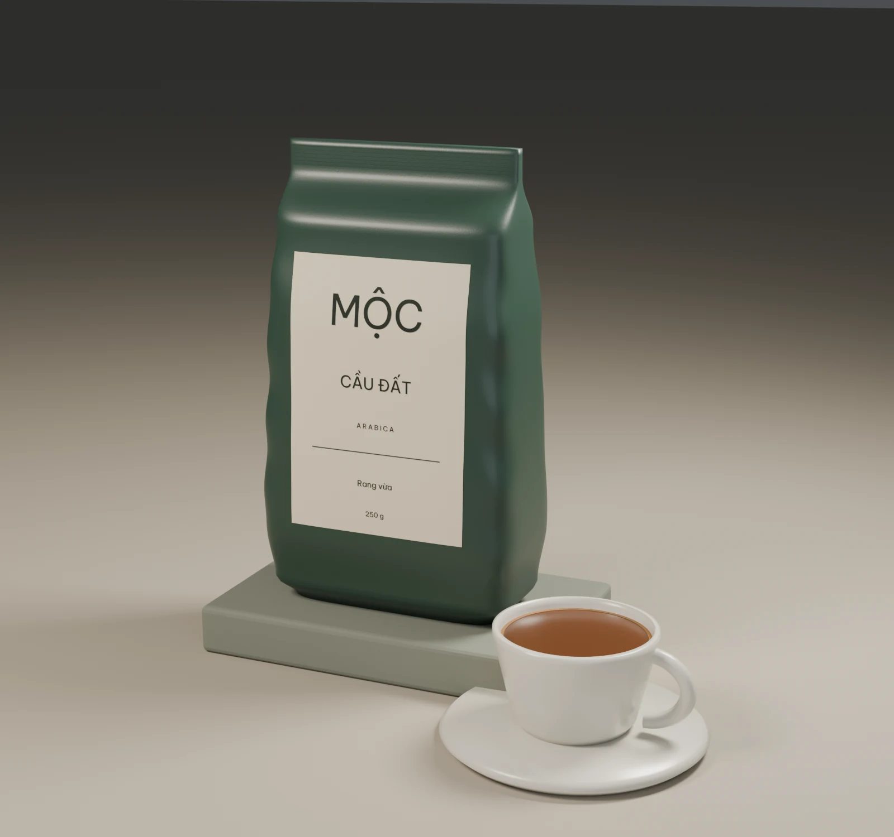
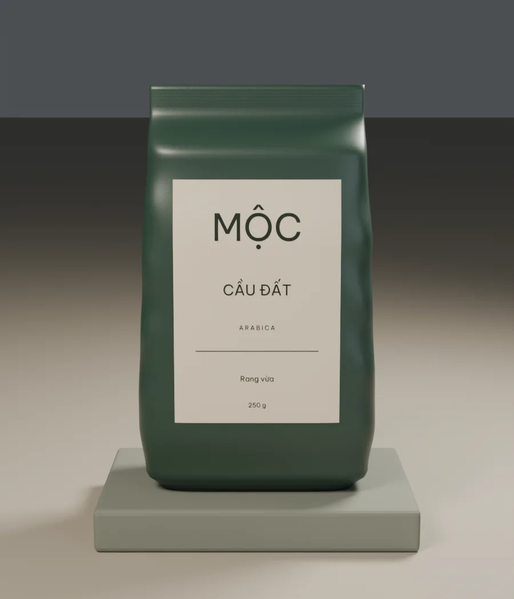
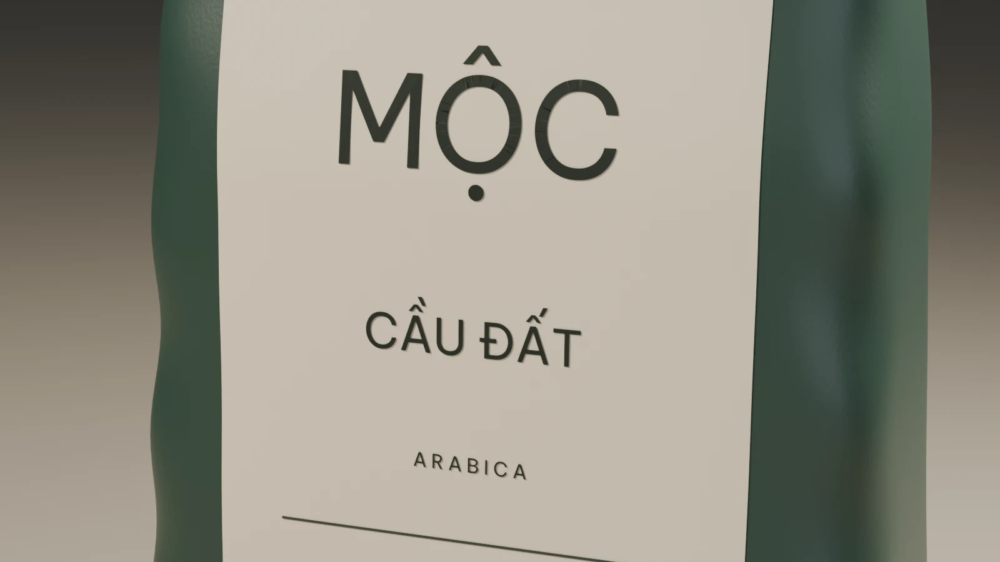

Phin
20 g cà phê / 90 ml nước
Xay vừa–thô, nước khoảng 92–96°C. Ủ với 25 ml trong 30 giây, thêm phần nước còn lại. Thử mốc 4–5 phút.
01 / NGUỒN CỘI · THE ORIGIN
Giữa cao nguyên đầy nắng và sương,
một hành trình đậm vị đang lớn lên.
02 / MẺ RANG · THE ROAST
Chút lửa ấm. Chút kiên nhẫn.
Để mỗi hạt kể câu chuyện của riêng mình.
03 / PHA CHẾ · THE CRAFT
Một nhịp chậm giữa ngày vội.
Hương thơm lan nhẹ, vị cà phê đọng sâu.
04 / THƯỞNG THỨC · YOUR RITUAL
Từ đất lành đến chiếc tách trên tay.
Mộc mạc thôi. Đủ để nhớ.
MỘC Coffee · Thương hiệu minh họa
Tuyển chọn của Mộc
Một lời mời từ cao nguyên. Hương hoa thanh, chút cam vàng và hậu vị chocolate — dành cho chiếc tách bạn muốn uống chậm.
Rang vừa / 250 g Phiên bản thiết kế minh họa

Góc nhìn gần hơn
Sắc xanh trầm. Nếp túi mềm. Một nhãn giấy vừa đủ để kể tên nơi hạt cà phê bắt đầu.

Kéo ngang hoặc dùng phím ← → khi khung ảnh được chọn.
24 góc nhìn · Xoay theo tay bạn
Arabica Cầu Đất là nguồn cảm hứng cho dòng sản phẩm minh họa này.
Trong từng chi tiết
Bề mặt mờ, giấy ấm, những nếp gấp tự nhiên. Chất liệu lùi một bước để tên gọi và hương vị được ở phía trước.

Mộc sẽ gợi ý hướng hương vị và một công thức pha để bạn thử.
Mang nhịp chậm về nhà
Thông số khởi đầu để thử, rồi điều chỉnh theo hạt, dụng cụ và khẩu vị của bạn.
20 g cà phê / 90 ml nước
Xay vừa–thô, nước khoảng 92–96°C. Ủ với 25 ml trong 30 giây, thêm phần nước còn lại. Thử mốc 4–5 phút.
15 g cà phê / 240 ml nước
Xay vừa, nước khoảng 90–94°C. Ủ với 40 ml trong 30 giây, rót chậm thành nhiều đợt. Thử mốc 2:30–3 phút.
18 g vào / 36 g ra
Xay mịn. Thử chiết xuất trong 25–30 giây; chỉnh cỡ xay theo dòng chảy và vị. Thêm sữa nếu đó là gu của bạn.